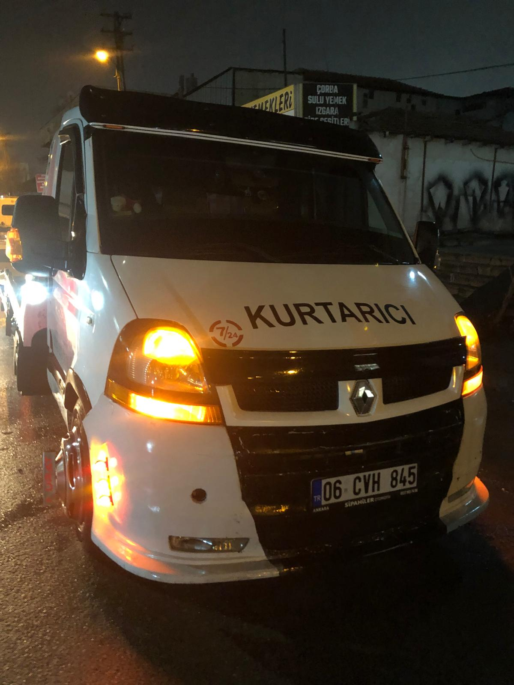
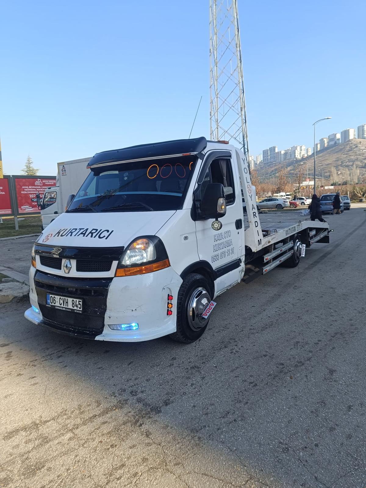
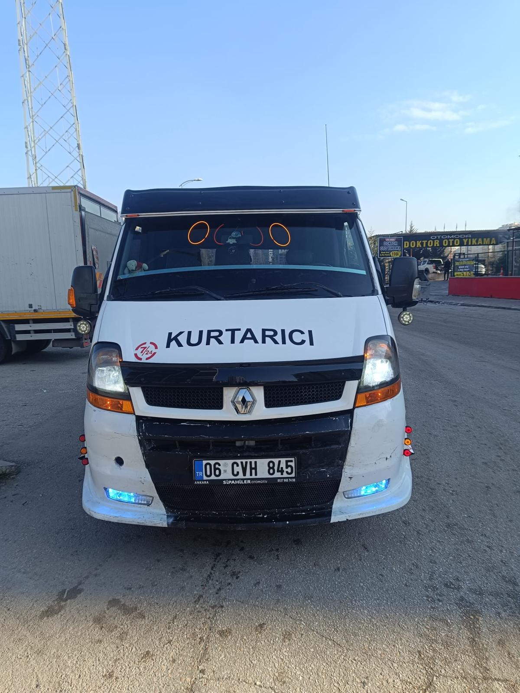
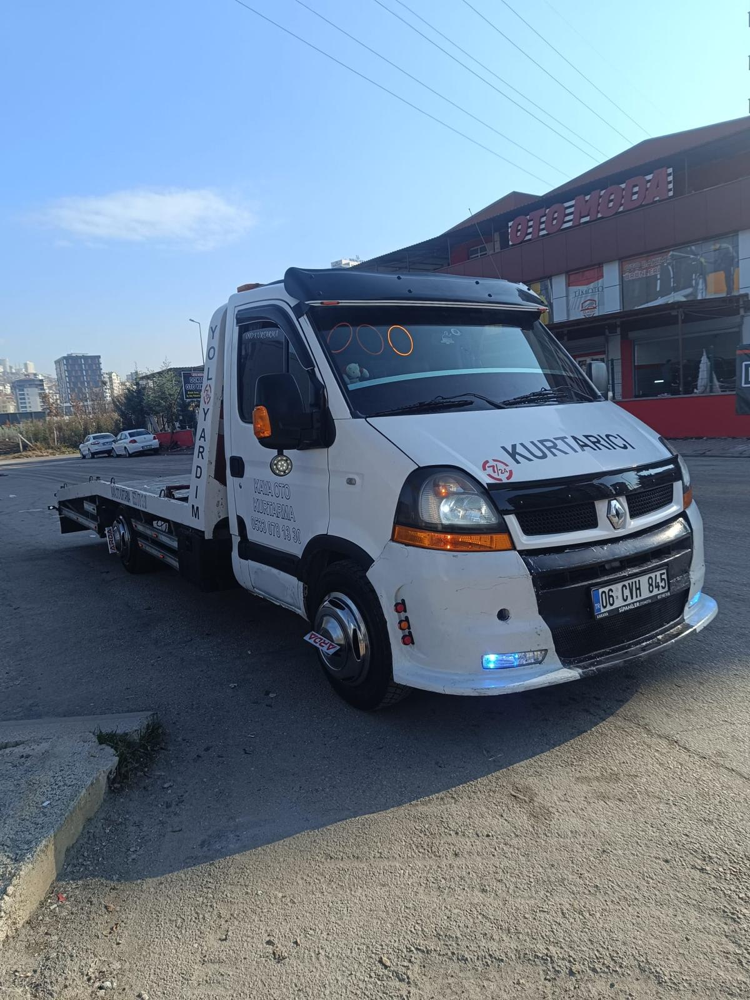

Çankaya Oto Kurtarma
Çankaya oto kurtarma hizmetimiz ile 7/24 hızlı çekici desteği sağlıyoruz. Çankaya'nın tüm mahallelerine ortalama 15 dakikada ulaşarak aracınızı güvenle kurtarıyoruz.

Ankara genelinde ihtiyaç duyduğunuz her an, en hızlı şekilde yanınızdayız.

Kaza, arıza veya herhangi bir durumda aracınızı güvenle kurtarıyoruz. Modern ekipmanlarımızla her türlü araca hizmet veriyoruz.
Hemen Ara
Şehir içi ve şehirler arası profesyonel çekici hizmeti. Aracınızı istediğiniz noktaya güvenle taşıyoruz.
Hemen Ara
Lastik patlaması, akü bitme, yakıt bitmesi gibi acil durumlarda hızlı yol yardım hizmeti sunuyoruz.
Hemen AraAnkara içinde aracınızı istediğiniz adrese güvenli bir şekilde taşıyoruz. Hasarsız teslimat garantisi.
Hemen AraAcil durumlarda en hızlı müdahale ekibimizle yanınızdayız. Kaza ve arıza anında dakikalar içinde ulaşıyoruz.
Hemen Ara23 ilçede 7/24 oto kurtarma ve çekici hizmeti veriyoruz.
Çankaya oto kurtarma hizmetimiz ile 7/24 hızlı çekici desteği sağlıyoruz. Çankaya'nın tüm mahallelerine ortalama 15 dakikada ulaşarak aracınızı güvenle kurtarıyoruz.
Keçiören bölgesinde 7/24 oto kurtarma ve çekici hizmeti. Keçiören'in her noktasında arıza ve kaza durumlarında hızlı müdahale ile yanınızdayız.
Yenimahalle oto kurtarma hizmeti ile aracınız güvende. Yenimahalle genelinde profesyonel ekipmanlarla hızlı çekici ve yol yardım desteği sunuyoruz.
Mamak'ta oto kurtarma ve çekici ihtiyacınız için 7/24 hizmetinizdeyiz. Mamak bölgesinde en hızlı varış süresi ile aracınızı güvenle taşıyoruz.
Altındağ oto kurtarma hizmetimiz ile acil durumlarda yanınızdayız. Altındağ'ın tüm semtlerine hızlı ulaşım ve uygun fiyatlı çekici desteği sağlıyoruz.
Sincan ve çevresinde 7/24 oto kurtarma hizmeti. Sincan organize sanayi dahil tüm bölgelere profesyonel çekici ve kurtarma desteği veriyoruz.
Etimesgut oto kurtarma ve çekici hizmeti ile gece gündüz yanınızdayız. Etimesgut bölgesinde hızlı müdahale ve güvenli araç taşıma hizmeti sunuyoruz.
Gölbaşı'nda oto kurtarma ve yol yardım desteği. Gölbaşı ilçesi ve Mogan Gölü çevresinde 7/24 profesyonel çekici hizmeti ile hizmetinizdeyiz.
Pursaklar bölgesinde güvenilir oto kurtarma hizmeti. Pursaklar ve çevresinde her türlü araç için 7/24 çekici ve acil yol yardım desteği sağlıyoruz.
Polatlı oto kurtarma hizmetimiz ile uzak mesafelerde bile yanınızdayız. Polatlı ve çevre yollarda araç kurtarma ve çekici hizmeti veriyoruz.
Beypazarı'nda 7/24 oto kurtarma ve çekici desteği. Beypazarı yollarında arıza ve kaza durumlarında hızlı ve güvenilir hizmet sunuyoruz.
Nallıhan oto kurtarma hizmeti ile Ankara-Bolu yolu dahil tüm güzergahlarda çekici desteği sağlıyoruz. 7/24 acil kurtarma hizmetinizdeyiz.
Ayaş ve çevresinde profesyonel oto kurtarma hizmeti. Ayaş ilçesinde araç arızası ve kaza durumlarında hızlı çekici desteği veriyoruz.
Bala'da oto kurtarma ve çekici hizmeti ile yanınızdayız. Bala ilçesi ve kırsal yollarında 7/24 güvenilir araç kurtarma desteği sunuyoruz.
Elmadağ oto kurtarma hizmetimiz ile dağlık bölgelerde bile güvenle hizmet veriyoruz. Elmadağ'da 7/24 çekici ve acil yol yardım desteği.
Kalecik'te profesyonel oto kurtarma hizmeti. Kalecik ilçesi ve çevre köylerinde araç kurtarma, çekici ve yol yardım hizmeti veriyoruz.
Kızılcahamam ve termal yolu güzergahında 7/24 oto kurtarma hizmeti. Kızılcahamam'da arıza ve kaza anında hızlı çekici desteği sağlıyoruz.
Çubuk oto kurtarma ve çekici hizmeti ile Çubuk ilçesi ve Çubuk Barajı çevresinde 7/24 güvenilir araç kurtarma desteği sunuyoruz.
Akyurt bölgesinde 7/24 oto kurtarma hizmeti. Akyurt ve Esenboğa Havalimanı çevresinde hızlı çekici ve yol yardım desteği veriyoruz.
Haymana'da oto kurtarma ve çekici hizmeti ile yanınızdayız. Haymana kaplıcaları güzergahı dahil tüm yollarda 7/24 acil destek sağlıyoruz.
Evren ilçesinde güvenilir oto kurtarma hizmeti. Evren ve çevre yollarında araç kurtarma, çekici ve yol yardım desteği sunuyoruz.
Şereflikoçhisar'da 7/24 oto kurtarma ve çekici hizmeti. Tuz Gölü güzergahı ve Ankara-Aksaray yolunda hızlı acil kurtarma desteği veriyoruz.
Kahramankazan oto kurtarma hizmetimiz ile Ankara-İstanbul yolu dahil tüm güzergahlarda 7/24 profesyonel çekici ve kurtarma desteği sağlıyoruz.
Yıllardır Ankara genelinde binlerce müşteriye hizmet vermenin tecrübesiyle yanınızdayız.
Gece gündüz, hafta sonu ve resmi tatiller dahil her an hizmetinizdeyiz.
Ankara'nın her noktasına ortalama 15-20 dakikada ulaşıyoruz.
Kaliteli hizmeti en uygun fiyatlarla sunuyoruz. Gizli maliyet yok.
Deneyimli ve eğitimli kadromuz ile aracınız güvende.
Ankara'nın 23 ilçesine ve çevre yollarına hizmet veriyoruz.
Profesyonel ekipmanlarımız ve başarılı operasyonlarımızdan görseller.
7/24 hizmet hattımızdan bize ulaşabilir, anında destek alabilirsiniz.
Ankara'nın her noktasında 7/24 oto kurtarma, çekici ve yol yardım hizmeti. Bize istediğiniz zaman ulaşabilirsiniz.